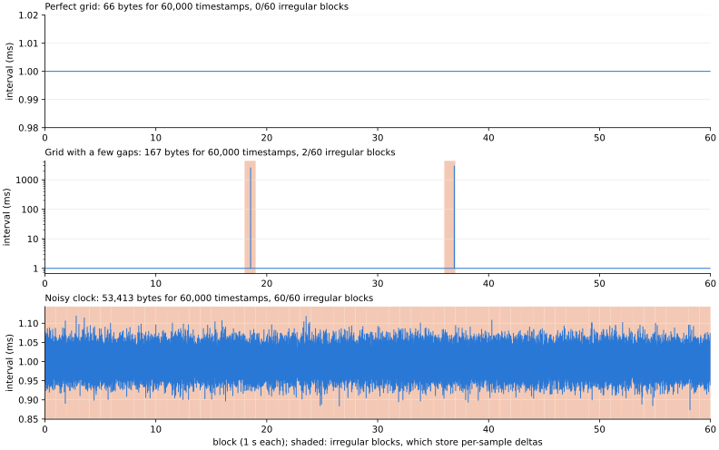
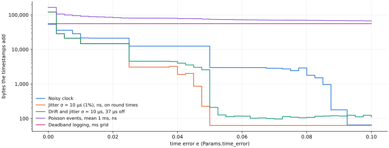

← codec comparison (index.html) · SPEC §3: time axis
fluxcode can store each sample's timestamp exactly next to its values (by default; the
last section lets them move by a share of an interval). This page covers only that time
axis: what the timestamps add to a one-minute block group (60 blocks of 1,000 samples, nominally 1 kHz, int64 ns ticks).
Every number here is the block group with times minus the same block group without them. For scale, that block group's values alone take
17,976 bytes (a 4.12 Hz sine at the default settings), 303 µs to encode and
111 µs to decode.
Regenerate: cd experimental && uv run python make_time_report.py.
A perfect grid, and a perfect grid with a few gaps, are by far the most common timestamps in practice. A noisy clock (host timestamps on arrival) is the third common shape, and the only one of the three where the timestamps cost more than the values (here about two and a half times as much).

| shape | what it is | bytes (example) | bits/sample | irregular blocks | vs values | bytes over 64 groups: median | max | encode time added | decode time added |
|---|---|---|---|---|---|---|---|---|---|
| Perfect grid | Every interval exactly 1 ms: hardware-clocked acquisition, resampled or synthesized series. | 66 | 0.009 | 0/60 | 0.4% | 66 | 133 | +10 µs (+3%) | +12 µs (+11%) |
| Grid with a few gaps | A perfect grid that sometimes skips: dropped packets, reconnects, a paused logger (Poisson, mean 2 gaps per minute, each 5 ms to 3 s). | 167 | 0.022 | 2/60 | 0.9% | 166 | 834 | +17 µs (+6%) | +15 µs (+14%) |
| Noisy clock | Host timestamps on arrival: 1 ms nominal, σ = 20 µs jitter, µs resolution. | 53,413 | 7.122 | 60/60 | 297.1% | 53,411 | 53,560 | +333 µs (+110%) | +125 µs (+113%) |
The example is the median-size block group of 64 seeds per shape. Times are single thread, best of 60, Apple M3 on AC power; each added time's percentage is of the same block group's values-only encode (303 µs) or decode (111 µs). vs values is the timestamps' bytes as a share of the values' 17,976.
Params(time_error=0.1) the same clock
costs 65 bytes (last section).A grid with k gaps per minute, each 5 ms to 3 s; median of 16 block groups per row.
| gaps per minute | irregular blocks | bytes | bits/sample | bytes per gap |
|---|---|---|---|---|
| 0 | 0/60 | 63 | 0.008 | — |
| 1 | 1/60 | 125 | 0.017 | 62 |
| 2 | 2/60 | 164 | 0.022 | 51 |
| 5 | 5/60 | 747 | 0.100 | 137 |
| 10 | 9/60 | 914 | 0.122 | 85 |
| 20 | 17/60 | 1,140 | 0.152 | 54 |
| 60 | 38/60 | 1,374 | 0.183 | 22 |
For comparison, shapes with many more irregular blocks (from bench/time_axis.py). Only the
cases with random intervals cost more than the values. Percentages are of the values-only encode and decode, as
above.
| timestamps | bytes | bits/sample | irregular blocks | encode time added | decode time added |
|---|---|---|---|---|---|
| 1 kHz, 20 gaps | 1,094 | 0.146 | 19/60 | +93 µs (+31%) | +51 µs (+46%) |
| 1 kHz, 1% dropped | 1,461 | 0.195 | 60/60 | +258 µs (+85%) | +105 µs (+95%) |
| drifting clock (0.99998 ms) | 339 | 0.045 | 60/60 | +223 µs (+74%) | +76 µs (+68%) |
| jitter σ=10 µs, ns resolution | 120,712 | 16.095 | 60/60 | +422 µs (+139%) | +151 µs (+137%) |
| jitter σ=10 µs, µs resolution | 45,903 | 6.120 | 60/60 | +331 µs (+109%) | +106 µs (+96%) |
| Poisson events, mean 1 ms, µs | 87,889 | 11.719 | 60/60 | +326 µs (+108%) | +160 µs (+144%) |
| Poisson events, mean 1 ms, ns | 164,661 | 21.955 | 60/60 | +383 µs (+126%) | +179 µs (+162%) |
| deadband logging, ms grid | 55,498 | 7.400 | 60/60 | +527 µs (+174%) | +209 µs (+189%) |
| bursts 10 kHz / idle | 102 | 0.014 | 60/60 | +129 µs (+42%) | +83 µs (+75%) |
1% dropped and a drifting clock stay cheap: their intervals take two or three values. Jitter, Poisson events and deadband logging have random intervals, and ns resolution costs more than µs when the jitter really is at ns resolution.
When the jitter is measurement noise, Params(time_error=e) lets fluxcode round the timestamps
(0 to 0.5; the default 0 keeps them exact). Each block gets the coarsest consistent step at which 95% of its
times keep within e of their own interval, and none moves more than e of the block's mean interval.
The values are kept as measured, and the format doesn't change: the decoder sees ordinary times.
update_time_blocks stores new times exactly, and replace_time_blocks re-encodes
whole blocks from the samples given.
| timestamps | exact | e = 0.02 | e = 0.05 | e = 0.1 |
|---|---|---|---|---|
| Perfect grid | 66 B · 0/60 +20 µs (+7%) | 66 B · 0/60 +37 µs (+12%) · max 0.000 | 66 B · 0/60 +37 µs (+12%) · max 0.000 | 66 B · 0/60 +36 µs (+12%) · max 0.000 |
| Grid with a few gaps | 167 B · 2/60 +26 µs (+9%) | 167 B · 2/60 +49 µs (+16%) · max 0.000 | 167 B · 2/60 +49 µs (+16%) · max 0.000 | 167 B · 2/60 +49 µs (+16%) · max 0.000 |
| Noisy clock | 53,413 B · 60/60 +345 µs (+114%) | 21,168 B · 60/60 +489 µs (+161%) · max 0.010 | 2,990 B · 60/60 +493 µs (+163%) · max 0.050 | 65 B · 0/60 +118 µs (+39%) · max 0.092 |
| Jitter σ = 10 µs (1%), ns, on round times | 120,712 B · 60/60 +410 µs (+135%) | 14,726 B · 60/60 +484 µs (+160%) · max 0.010 | 63 B · 0/60 +126 µs (+41%) · max 0.046 | 63 B · 0/60 +125 µs (+41%) · max 0.046 |
| The same, free-running: 50 µs off the epoch's grid | 120,653 B · 60/60 +426 µs (+141%) | 14,667 B · 60/60 +476 µs (+157%) · max 0.010 | 66 B · 0/60 +125 µs (+41%) · max 0.044 | 66 B · 0/60 +124 µs (+41%) · max 0.054 |
| Drifting clock (0.99998 ms) | 339 B · 60/60 +214 µs (+71%) | 87 B · 0/60 +137 µs (+45%) · max 0.020 | 93 B · 0/60 +130 µs (+43%) · max 0.049 | 93 B · 0/60 +123 µs (+40%) · max 0.098 |
| Drift and jitter σ = 10 µs, 37 µs off | 120,648 B · 60/60 +420 µs (+138%) | 14,661 B · 60/60 +488 µs (+161%) · max 0.010 | 210 B · 1/60 +159 µs (+52%) · max 0.050 | 111 B · 0/60 +142 µs (+47%) · max 0.100 |
| Poisson events, mean 1 ms, ns | 164,661 B · 60/60 +391 µs (+129%) | 83,222 B · 60/60 +560 µs (+185%) · max 0.001 | 74,009 B · 60/60 +566 µs (+187%) · max 0.002 | 66,078 B · 60/60 +561 µs (+185%) · max 0.005 |
| Deadband logging, ms grid | 55,498 B · 60/60 +528 µs (+174%) | 55,498 B · 60/60 +682 µs (+225%) · max 0.000 | 55,498 B · 60/60 +695 µs (+229%) · max 0.000 | 55,498 B · 60/60 +708 µs (+234%) · max 0.000 |
| 1024 Hz clock, jitter 0.5% (no 1-2-5 step divides the period) | 112,735 B · 60/60 +410 µs (+135%) | 9,221 B · 49/60 +469 µs (+155%) · max 0.020 | 131 B · 0/60 +149 µs (+49%) · max 0.050 | 100 B · 0/60 +154 µs (+51%) · max 0.101 |
| 60 Hz clock, jitter 0.5% (no 1-2-5 step divides the period) | 144,005 B · 60/60 +422 µs (+139%) | 5,995 B · 48/60 +438 µs (+145%) · max 0.020 | 216 B · 0/60 +183 µs (+60%) · max 0.051 | 125 B · 0/60 +172 µs (+57%) · max 0.102 |
Each cell: bytes the timestamps add · irregular blocks of 60, then the encode time they add (percentage of the values-only encode, 303 µs) and the largest move in mean intervals. Single thread, best of 60, Apple M3 on AC power. The chart samples e every 0.0025.
Measurements behind the choices (1-2-5 steps over powers of two, no interpolation of values, no resampling, per-block phases): docs/TUNING.md, Time error.